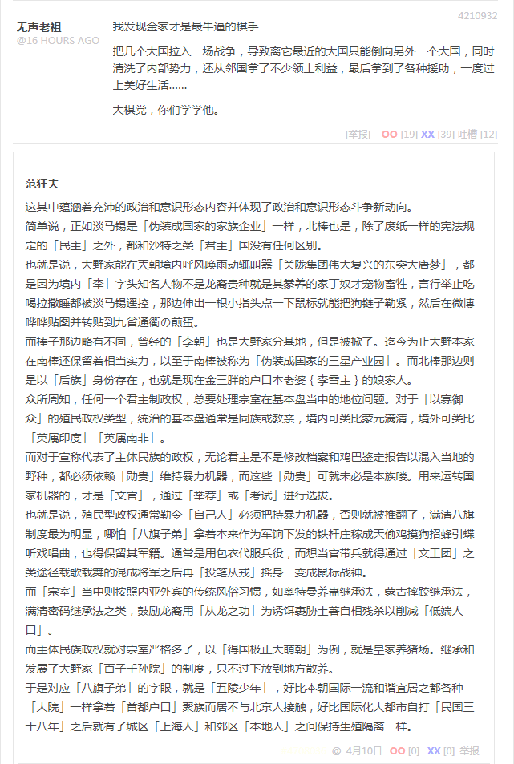

段子 4210932
我发现金家才是最牛逼的棋手
把几个大国拉入一场战争，导致离它最近的大国只能倒向另外一个大国，同时清洗了内部势力，还从邻国拿了不少领土利益，最后拿到了各种援助，一度过上美好生活……
大棋党，你们学学他。
这其中蕴涵着充沛的政治和意识形态内容并体现了政治和意识形态斗争新动向。
简单说，正如淡马锡是「伪装成国家的家族企业」一样，北棒也是，除了废纸一样的宪法规定的「民主」之外，都和沙特之类「君主」国没有任何区别。
也就是说，大野家能在兲朝境内呼风唤雨动辄叫嚣「关陇集团伟大复兴的东突大唐梦」，都是因为境内「李」字头知名人物不是龙裔贵种就是其豢养的家丁奴才宠物畜牲，言行举止吃喝拉撒睡都被淡马锡遥控，那边伸出一根小指头点一下鼠标就能把狗链子勒紧，然后在微博哗哗贴图并转贴到九省通衢の煎蛋。
而棒子那边略有不同，曾经的「李朝」也是大野家分基地，但是被掀了。迄今为止大野本家在南棒还保留着相当实力，以至于南棒被称为「伪装成国家的三星产业园」。而北棒那边则是以「后族」身份存在，也就是现在金三胖的户口本老婆李雪主的娘家人。
众所周知，任何一个君主制政权，总要处理宗室在基本盘当中的地位问题。对于「以寡御众」的殖民政权类型，统治的基本盘通常是同族或教亲，境内可类比蒙元满清，境外可类比「英属印度」「英属南非」。
而对于宣称代表了主体民族的政权，无论君主是不是修改档案和鸡巴鉴定报告以混入当地的野种，都必须依赖「勋贵」维持暴力机器，而这些「勋贵」可就未必是本族喽。用来运转国家机器的，才是「文官」，通过「举荐」或「考试」进行选拔。
也就是说，殖民型政权通常勒令「自己人」必须把持暴力机器，否则就被推翻了。满清八旗制度最为明显，哪怕「八旗子弟」拿着本来作为军饷下发的铁杆庄稼成天偷鸡摸狗招蜂引蝶听戏唱曲，也得保留其军籍。通常是用包衣代服兵役，而想当官带兵就得通过「文工团」之类途径载歌载舞的混成将军之后再「投笔从戎」摇身一变成鼠标战神。
而「宗室」当中则按照内亚外宾的传统风俗习惯，如奥特曼养蛊继承法，蒙古摔跤继承法，满清密码继承法之类，鼓励龙裔用「从龙之功」为诱饵裹胁土著自相残杀以削减「低端人口」。
而主体民族政权就对宗室严格多了，以「得国极正大萌朝」为例，就是皇家养猪场。继承和发展了大野家「百子千孙院」的制度，只不过下放到地方散养。
于是对应「八旗子弟」的字眼，就是「五陵少年」，好比本朝国际一流和谐宜居之都各种「大院」一样拿着「首都户口」聚族而居不与「北京人」接触，好比国际化大都市自打「民国三十八年」之后就有了城区「上海人」和郊区「本地人」还保持生殖隔离一样。
补充
正因为「五陵少年」在「大院」，「八旗子弟」在「满城」，不与当地土著接触，所以作为中介的掮客，就是「有活力的民间团体」。通常强抢民女送进「大院」「满城」然后以荷枪实弹之哨兵阻挠苦主家属入内，杀伐果断通权达变狠角色还会「依法治国」，以「冲击军事重地」借口把所有不稳定因素扼杀在萌芽阶段。
顺便，昨天才「清明时节雨纷纷」，四五运动人断魂。可能有很多童年才俊不明白，在这兲子胯下首善之区十步一岗五步一哨夜不闭户路不拾遗的国际一流和谐宜居之都，为啥动辄就能有上百万人民群众「自发」的涌向广场「利用淫湿搞反党活动」呢？
很简单，都是这些「大院」「满城」里面的亲兵家丁奴才宠物畜牲，不属于北京市管辖，甚至不属于「中央」管辖。本来这些「大院」就是地方诸侯驻京办事处和据点，豢养的死士极大充沛，经常与色目混混鸡鸣狗盗之徒勾肩搭背称兄道弟联手为非作歹。
这些「伪装成小区的碉堡炮楼」里面甭说枪杆子迫击炮，只要识大体顾大局懂政治讲规矩守纪律一切行动听指挥，万里之遥主子一声令下，开出几辆历史の五对负重轮出来将人缘差情商低的贱种屁民碾为齑粉都不奇怪，顺便还能以「人民的名义」「清君侧」呢。
在国际一流和谐宜居之都土生土长的我，清明时节雨纷纷那次没赶上，春夏之交那次还小感受不深，都没收集到足够充沛的素材。走过路过不容错过，一直呆在「囧斋」无论色目逗哔怎么喷都不动弹，就是等着看热闹呢，砥砺奋进六年来果然看到了充沛的色目混混鸡鸣狗盗之徒的「踩点」准备工作。
尤其是最近，每天出门都在不惮以最大的恶意揣测，周边这帮伪装成人民群众的「死士」怎么和色目混混鸡鸣狗盗之徒串联，然后以「十几个人七八条枪」为单位聚沙成塔集腋成裘，逐渐凝成一股「革命」洪流，在什么「国际」的指挥下，打烂一个万恶的旧社会再建立起一个百善の新时代呢。